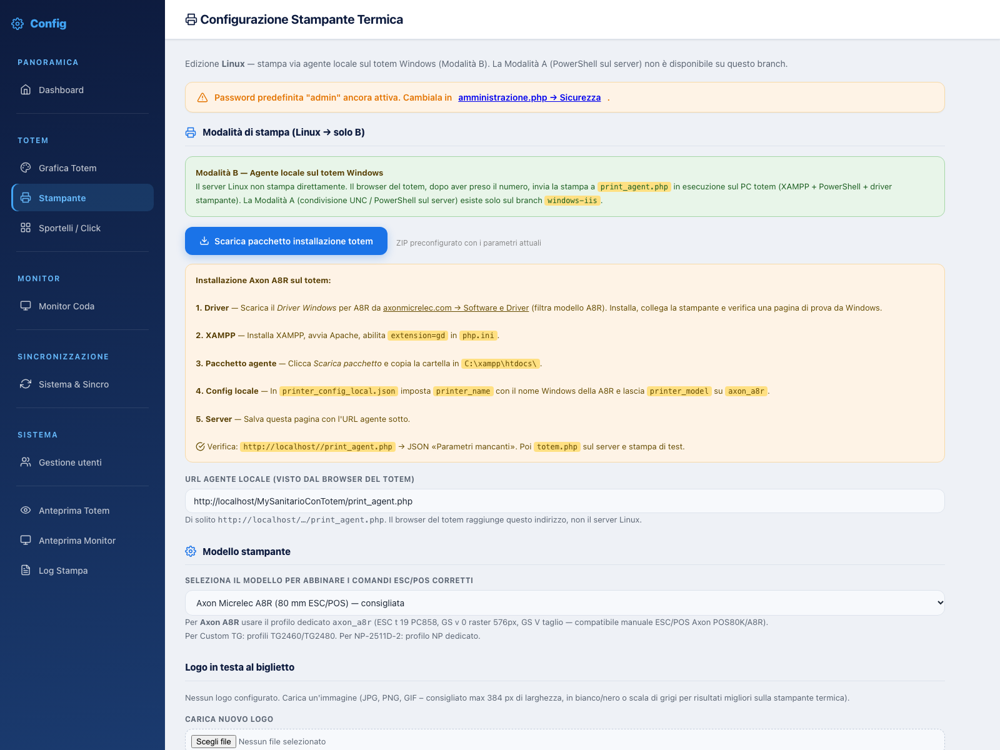

Stampante
Come il biglietto arriva alla termica su un server Linux: il server non stampa, il browser del totem manda il lavoro a un piccolo agente in esecuzione sul PC del chiosco.
La Modalità A (condivisione UNC e PowerShell lanciato dal server) è disponibile esclusivamente sul ramo windows-iis. Su Linux la pagina mostra un unico pannello: agente locale sul totem. Se stai seguendo una guida che parla di stampanti di rete enumerate dal server, si riferisce all'altro ramo.

Il flusso di stampa
- Il paziente tocca il servizio
totem.phpchiama il server, che genera il numero e restituisce i dati del turno. - Il browser del totem chiama l'agente
Il JavaScript del totem invia i dati a
local_agent_url, cioèprint_agent.phpin ascolto su localhost del totem. - L'agente compone il comando ESC/POS
Usa il profilo del modello selezionato: codepage, raster del logo, avanzamento e taglio.
- PowerShell manda i byte alla coda Windows
Lo script locale scrive i byte sulla stampante condivisa del PC, senza piloti web.
- Il biglietto esce
In caso di errore l'agente risponde con un JSON e il totem mostra l'avviso; il dettaglio finisce in Log Stampa.
Preparare il PC del totem
| Requisito | Note |
|---|---|
| Windows con XAMPP | Apache attivo; l'agente è una pagina PHP servita da C:\xampp\htdocs\ |
| Estensione GD | Va abilitata in php.ini: serve a convertire il logo in raster monocromatico |
| Driver della termica | Installato e verificato con una pagina di prova di Windows prima di toccare il gestionale |
| PowerShell | Esegue print_raw.ps1, che invia i byte alla coda |
printer_config_local.json | Nome Windows della stampante e modello, nella cartella dell'agente |
- Driver
Scarica il driver Windows del modello (per l'Axon A8R dal sito Axon Micrelec), installalo, collega la stampante e stampa la pagina di prova di Windows.
- XAMPP
Installa XAMPP, avvia Apache, abilita
extension=gdnelphp.inie riavvia il servizio. - Pacchetto agente
Dal pannello usa Scarica pacchetto installazione totem: ottieni uno ZIP già precompilato con i parametri correnti. Copia la cartella in
C:\xampp\htdocs\. - Configurazione locale
In
printer_config_local.jsonimpostaprinter_namecon il nome esatto della stampante in Windows e lasciaprinter_modelcoerente con il modello scelto nel pannello. - URL nel pannello
Salva
local_agent_url(per esempiohttp://localhost/MySanitarioConTotem/print_agent.php). È l'indirizzo visto dal browser del totem, non dal server. - Verifica
Apri quell'URL nel browser del totem: deve rispondere un JSON con «Parametri mancanti». Quella risposta significa che l'agente è raggiungibile. Poi usa Stampa biglietto di test.
Modello e profilo ESC/POS
Il modello scelto determina i comandi inviati alla stampante. Non è un'etichetta: cambiano codepage, larghezza massima dell'immagine, modalità raster e tipo di taglio.
| Profilo | Larghezza | Note |
|---|---|---|
axon_a8r | 80 mm — 576 dot | Axon Micrelec A8R / famiglia POS80K, profilo consigliato; codepage PC858 |
escpos_generic | 80 mm | ESC/POS generico ed Epson compatibili |
custom_tg2460 | 60 mm | Custom TG2460HIII |
custom_tg2480 | 80 mm | Custom TG2480HIII |
np2511d2 | 80 mm | NP-2511D-2 |
epson_t88 | 80 mm | Epson TM-T88 e cloni |
Quasi sempre il modello selezionato non corrisponde alla stampante fisica. Prova il profilo dichiarato dal costruttore; se non esiste, parti da escpos_generic e verifica taglio e avanzamento con la stampa di prova.
Testi e logo del biglietto
| Campo | Contenuto tipico |
|---|---|
intestazione1 | Riga principale, per esempio “BIGLIETTO PRENOTAZIONE” |
intestazione2 | Nome della struttura o reparto |
piede | Indicazione finale, orari o ringraziamento |
logo_path | Logo normalizzato in printer_logo.png; la rimozione cancella il file |
Il logo viene convertito in monocromia e ridotto alla larghezza utile del rotolo: usa immagini semplici, con poco dettaglio fine, altrimenti in stampa termica si ottiene una macchia grigia.
Stampa di prova
- Salva la configurazione
Le modifiche non vengono inviate alla stampa finché non sono salvate in
printer_config.json. - Premi “Stampa biglietto di test”
Il pulsante interroga l'agente e stampa un biglietto di esempio con i testi correnti.
- Controlla tre cose
Il logo è leggibile, gli accenti non sono sostituiti da simboli, il taglio avviene dopo qualche millimetro di spazio bianco.
- Prova dal totem reale
La stampa di test parte dal browser in uso: l'ultima verifica va fatta dal chiosco, con lo stesso URL agente configurato.
Errori frequenti
| Sintomo | Causa probabile | Rimedio |
|---|---|---|
| Il totem dice “stampante non raggiungibile” | Apache sul totem spento o URL agente errato | Apri l'URL nel browser del totem: deve rispondere JSON |
| L'agente risponde 500 | Estensione GD disabilitata | Abilita extension=gd e riavvia Apache |
| Esce carta bianca | Nome stampante diverso da quello Windows | Correggi printer_name in printer_config_local.json |
| Accenti sbagliati | Codepage del profilo non adatta | Cambia profilo o sostituisci i caratteri non supportati |
| Stampa sgranata o tagliata | Logo troppo largo o troppo dettagliato | Riduci il logo, semplifica il disegno, usa solo testo |
Ogni tentativo di stampa lascia una traccia: gli errori si leggono da Log Stampa (stampa_errori_view.php) e dai log di Apache sul totem. La procedura di diagnosi completa è in Log e diagnostica.
linux
Documento statico, consultabile senza connessione